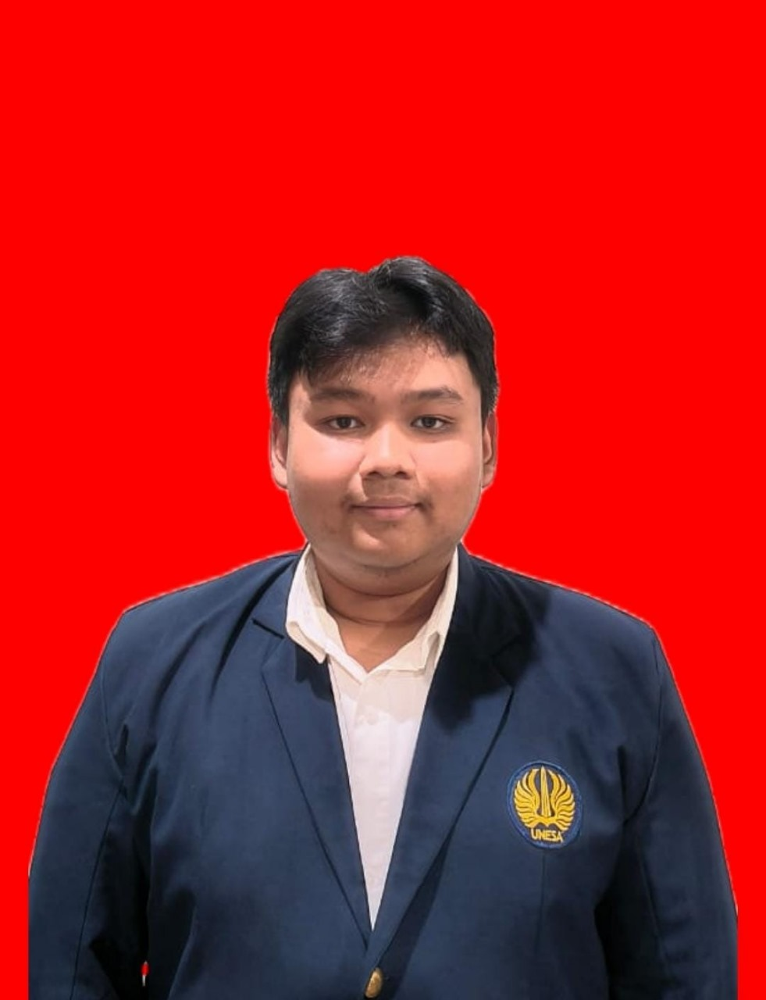

Saya Ivan Budi Saputra, mahasiswa D4 Manajemen Informatika, Universitas Negeri Surabaya. Saya tertarik pada pemrograman game dan kursus kecerdasan buatan.
Proyek ini adalah game tentang sepak bola VR, yang fokus pada tendangan penalti. Ada 2 mode: penjaga gawang atau penendang. Saya bertugas membuat objek 3D.